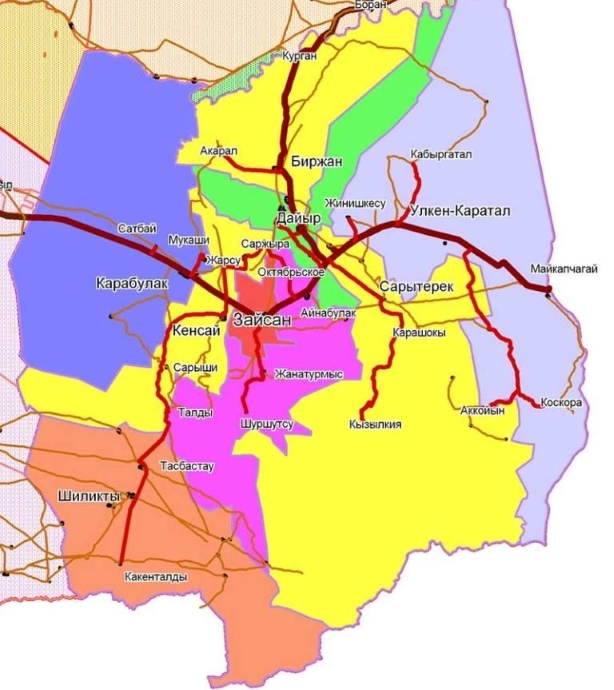

Зайсан ауданы әкімдік ғимараты
Халқы
Тұрғындары 36 979 адам (2019). Ұлттық құрамы: қазақтар – 97,36%, орыстар – 1,93%, басқа ұлт өкілдері – 0,71%.Зайсан ауданы бойынша 10 дiни бiрлестiктер бар: 1. Мұсылмандар бiрлестiгi. 350 тұрақты мүшелері бар, ауданда 7 мешіт үйі жұмыс істейді. 2. Православие шіркеуі. 45 тұрақты мүшелері бар. 3. 2 протестанттық секта - Церковь Евангельских христиан баптистов "Иман жолы" (қазақ тілінде жұмыс жүргізеді), тіркеу жұмыстарын қайта жүргізуде, және Церковь Евангельских христиан баптистов (орыс тілінде жұмыс жүргізеді.)
33 елді мекен 1 қалалық әкімдік пен 8 ауылдық округке біріктірілген:
| Зайсан қалалық әкімдігі | 14416 | Зайсан қаласы |
| Ауылдық округтер | Халқы (2009) | Елді мекендері |
|---|---|---|
| Айнабұлақ ауылдық округі | 2439 | Айнабұлақ, Жаңатұрмыс, Қайнар, Шыршысу ауылдары |
| Біржан ауылдық округі | 1677 | Біржан, Ақарал, Қуаныш ауылдары |
| Дайыр ауылдық округі | 2917 | Дайыр, Жамбыл, Көкжыра ауылдары |
| Кеңсай ауылдық округі | 2207 | Кеңсай, Бақасу, Жарсу, Сарыжыра ауылдары |
| Қарабұлақ ауылдық округі | 2125 | Қарабұлақ, Дауал, Мұқашы, Сәтбай ауылдары |
| Қаратал ауылдық округі | 3859 | Қаратал, Үлкен Қаратал, Жіңішкесу, Қосқора, Қабырғатал ауылдары |
| Сарытерек ауылдық округі | 2080 | Сарытерек, Аққайың, Шалқар, Көгедей ауылдары |
| Шілікті ауылдық округі | 2830 | Шілікті, Жалшы, Кәкенталды, Қарасай, Тасбастау ауылдары |
Географиялық орны, жер бедері
 Шығысында Қытай Халық Республикасымен шектеседі. Оңтүстігін Маңырақ жотасының шығыс бөлігі мен Сауыр жоталарының батыс бөлігі, жазық келген солтүстік жағын Зайсан қазаншұңқырының шығыс бөлігі алып жатыр. Қазаншұңқырдың солтүстік-шығыс бөлігінде Бозайғырқұм (Айғырқұм) құмы орналасқан. Ауданның теңіз деңгейінен биіктігі таулы бөлігінде 2500 – 2700 м, жазық бөлігінде 400 – 1000 м аралығында. Сауыр жотасының Үйдене өзені басталар тұсындағы ең биік шыңының биіктігі 2950 м. Ауданның Қытаймен шектесетін шығыс жағындағы Сауыр жотасында Баймырза асуы орналасқан. Кен байлықтарынан титан кентасы, шағын тас көмір, жанғыш тақтатас кендері, саз, құм, т.б. құрылыс материалдары бар.
Шығысында Қытай Халық Республикасымен шектеседі. Оңтүстігін Маңырақ жотасының шығыс бөлігі мен Сауыр жоталарының батыс бөлігі, жазық келген солтүстік жағын Зайсан қазаншұңқырының шығыс бөлігі алып жатыр. Қазаншұңқырдың солтүстік-шығыс бөлігінде Бозайғырқұм (Айғырқұм) құмы орналасқан. Ауданның теңіз деңгейінен биіктігі таулы бөлігінде 2500 – 2700 м, жазық бөлігінде 400 – 1000 м аралығында. Сауыр жотасының Үйдене өзені басталар тұсындағы ең биік шыңының биіктігі 2950 м. Ауданның Қытаймен шектесетін шығыс жағындағы Сауыр жотасында Баймырза асуы орналасқан. Кен байлықтарынан титан кентасы, шағын тас көмір, жанғыш тақтатас кендері, саз, құм, т.б. құрылыс материалдары бар.
Әлеуметтік құрылымдары
Зайсан ауданы бойынша мектеп жасына дейінгі 2875 баланың 400-і 5 мектепке дейінгі мекемеде, 1109-ы мектеп жанындағы шағын орталықтарда, бұл барлық баланың 76,6 пайызын құрап отыр. 2010 жылы 8 орта мектеп / Кеңсай, Абай, Амангелді, Шілікті, Қазақстан, Айнабұлақ, Мүкарама, Қаратал/ жанынан ашылған орталықтар кеңейтіліп, 140 орынды 8 топ, №1 «Еңлік» балабақшасында 50 орынды 2 топ қосымша ашылды, Қаратал, Сартерек ауылдарынан 75 орынды 2 жеке меншік балабақша ашылды. Жане 2015ж окушыларга арналып жаңа мектеп салынды бурынғы М.Дауленов атындағы мектеп М.Дауленов атындағы мектеп-интернаты деп жарияланды. Аудандағы 29 мектепте білім алып отырған 6557 оқушыны бар. Мектеп оқушыларының бос уақытын мазмұнды ұйымдастыру мақсатында 846 оқушы мектептен тыс мекемелерге тартылып отырса, 4339 оқушыға мектептерден 266 спорт секциялары мен үйірмелер ұйымдастырылып отыр.Ауданда 6439 оқушының 4008-не мектеп асханалары арқылы ыстық тамақ ұйымдастырылған, оның ішінде 1-4 сыныптардың 2396 оқушысы 100 пайыз тегін ыстық тамақпен қамтылған.
Мал шаруашылығы
Cтатистикалық мәліметтері бойынша аудан көлемінде мал шаруашылығы бойынша өндірілген мал өнімдері мен жалпы мал басының саны өткен жылдың осы мерзімімен салыстырғанда әлде қайда артқандығы байқалады. Ауданда сойылып сатылған ет 119,1%, сүт өндіру 118,4%, қырқылған жүн 107,1% артты. Мал басының саны өткен жылғыдан ірі қара 100,1%, қой мен ешкі 88%, жылқы 109,4%, құстар 118,2 пайызға артық орындалды.Малдың барлық түрлерін асылдандыру мақсатында бірқатар қомақты істер атқарылуда. Мысалы «Қара Ертіс» шаруа қожалығының бүгінгі күні шаруашылықта 1411 бас асыл тұқымды жартылай қылшық жүнді, қысқа төзімді, етті «Байыс» қойларын өсіруде. Сондай-ақ «Байыс» тұқымды қойларын өсірумен «Жасұлан» шаруа қожалығы айналысуда. Оның шаруашылығында асыл тұқымды қой саны 450 басты құрап отыр. Сонымен қатар өткен жылы жылқы тұқымын асылдандыру мақсатында Біржан ауыл округіне қарасты «Аружан» шаруа қожалығы «Қостанай» асыл тұқымды жылқысын Алматы облысынан әкеліп, өсіруде, Қаратал округіне қарасты «Түкібай» шаруа қожалығы асыл тұқымды жылқы шаруашылығы статусын алды. Ауданда 10 шаруа қожалығы ірі қара малдарын жаз бойы бордақылап, жайып, семірту шегіне жеткізіп, етке өткізді. 2010-2011 жылғы мал қыстатуға аудан бойынша 122,1, мың тонна ірі сабақты мал азығы дайындалды. Малды қолдан ұрықтандыру
Ауданның қазіргі кездегі өзгерістері
Аудан орталығы мен облыстың ара – қашықтығы - 465-тей шақырымдық жер.Қазақстан Республикасының тәуелсіздік алуымен елімізде кеден қызметі жолға қойылған. 1992 жылыдың мамыр айынан бастап, Шығыс аймақтық кеденіне қарасты «Майқапшағай» кеден бекеті құрылды. Ал, 1992 жылдың 22 желтоқсанынан бастап, Майқапшағай кедені болып бекітілді. Сондай-ақ, 2006 жылдың сәуір айынан бастап, «Майқапшағай-Жеменей» шекара сауда орталығы ашылған.2003 жылы Зайсан өңірінің Шілікті ауылында Қазақстан археологтарының қазба жұмыстарының негізінде, «Шілікті қорғаны» табылды. Онда ежелгі Сақ тайпасының «Алтын адамы» жауынгері табылды.
Ауданның қазіргі кездегі өзгерістері
Аудан орталығы мен облыстың ара – қашықтығы - 465-тей шақырымдық жер.Қазақстан Республикасының тәуелсіздік алуымен елімізде кеден қызметі жолға қойылған. 1992 жылыдың мамыр айынан бастап, Шығыс аймақтық кеденіне қарасты «Майқапшағай» кеден бекеті құрылды. Ал, 1992 жылдың 22 желтоқсанынан бастап, Майқапшағай кедені болып бекітілді. Сондай-ақ, 2006 жылдың сәуір айынан бастап, «Майқапшағай-Жеменей» шекара сауда орталығы ашылған. 2003 жылы Зайсан өңірінің Шілікті ауылында Қазақстан археологтарының қазба жұмыстарының негізінде, «Шілікті қорғаны» табылды. Онда ежелгі Сақ тайпасының «Алтын адамы» жауынгері табылды.
Өндіріс
Аудан экономикасының негізгі рөлін – агроөнеркәсіп алады, өйткені, маңызды орынды ауыл шаруашылығына береді. Осы кәсіптің шығарылатын өнімінің көлеміне байланысты, ауыл шаруашылығында мал шаруашылығы мен дәнді – дақылдар шаруашылығы өте қарқынды дамуда. Осының маңыздылығынан импорттық тауарлар азаюда. Ең бастысы, жергілікті халық өзін-өзі етпен, сүтпен, өсімдік майымен,жеміс-жидекпен, дәнді-дақылдармен, бау-бақша өнімдерімен, ұнмен тағы басқа өнімдермен қамтамасыз етуде. Ауданның жер асты байлығы зерттелген – қоңыр көмір мен жанатын сланецке бай. Бұл - өмір сүрудің, өндірісті өркендетудің негізі. Қазіргі таңда, Кендірлік жеріндегі «Аққойын» атты елді-мекенінде қара көмір игеріледі. Көмір өндіру ЖШС «Сайхан» ісі терең шахталық-техникалық әдіспен жолға қойып, одан жоғары химиялық өнім алумен қамтамасыз етілуде. Ол тек отынмен, ауданымызды ғана емес, сондай-ақ, көрші аудандарды да қамтамасыз етуде.2005 жылдан бастап, ЖШС «Балық өнім Шығыс» зауыты жұмыс істеуде. Сол сияқты минералды емдік сулар өндіруде. Әсіресе, Арасан-Талды, Ащылы жерлеріндегі сулардың көздері ашылып, игеру жолдарына қойылған. Онымен ЖШС «Зайсан сулары» айналысуда. Қазіргі таңда, біздің емдік ас-суымызға Өскемен, Семей, Қарағанды қалаларынан сұраныстар түсуде. Көршілес Қытай еліне де шығару көзделініп отыр. 2006 жылдың шілде айында облыстық көрмеде «Зайсан» минералды суы жүлделі бірінші орын мен хрусталь кубокқа ие болды. Сондай-ақ, республикалық көрмеге қатысуға жолдама алды. Аудан халықтарына АОА, өкпе ауруына қарсы аурухана, отбасылық – дәрігерлік амбулатория, фельдшерлік – акушерлік пунктілер, 11 дәріхана, 7 базар, 100 шақты дүкен түрлері, 8 АЗС, 25 тамақтандыру жерлері және халыққа түрлі көмек көрсету орындары бар. Аудан бойынша білім беретін мектептердің саны – 30, ал олардағы шәкірттер құрамы – 7994, ауыл мектебі – 24 болса, шағын комплетілі мектептер -17, мектепке дейінгі 3 бала мекемесінде 203 бүлдіршін тәрбиеленсе, мектептен тыс мекемелерге 809 бала қамтылған. Мектептер компьютерлендіріліп, Интернетке қосылып, мультимедиялық кабинеттер де ашылған. Жазғы каникул кезінде балалар мен жасөспірімдерді демалдыру мен сауықтыру орындары қызмет көрсетеді. Өнер мектебі, балалар мен жасөспірімдір мектебі, спорт мектептері бар.
Әлеуметтік құрылымдары
Әлеуметтік құрылымдары